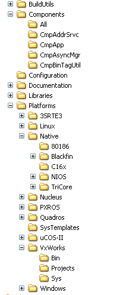

5.2.8. Source Tree of the Runtime System¶
The source tree of the runtime system is built as followed:
Figure 3: Source tree of the runtime system
All m4-Definitions and the m4 pre-processor you can find in the $\BuidlUtils directory.
The base directory is $\Components. Here you can find all Itf.h files in the root.
Under $\Components, you can find a directory for each kernel component, like $\Components\CmpApp. In each directory you can find all c-, cpp-, Dep.h and Dep.m4 files for every kernel component.
One special directory is the directory $\Components\All. This directory contains all kernel components and header files in flat order in single directory. This can be used on systems that have problems to compile and link the source files split in several directories. This simplifies the generation of make files too.
Under the directory $\Platforms you can find all operating system and processor adaptation components. The components are separated by the operating system. All native adaptations without an operating system, you can find under $\Platforms\Native.
Each adaptation part is separated into the directories $\Platforms\<OS>\Sys with the system implementations, $\Platforms\<OS>\Projects with the make files and project files and $\Platforms\<OS>\bin with the optional binaries that are shipped with the runtime system.